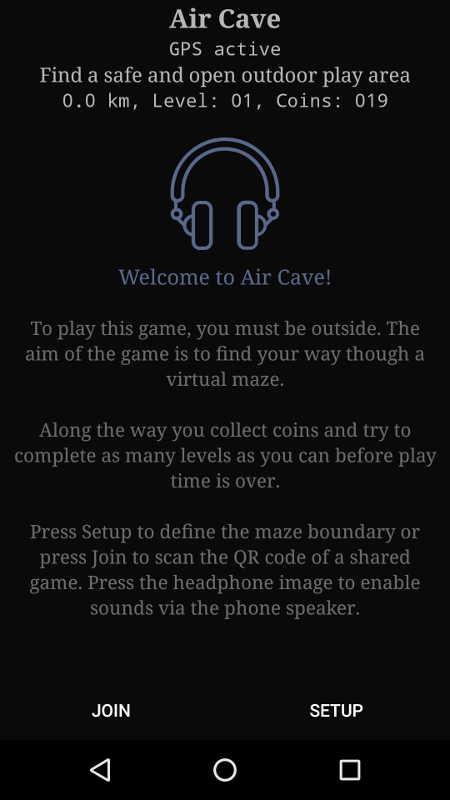
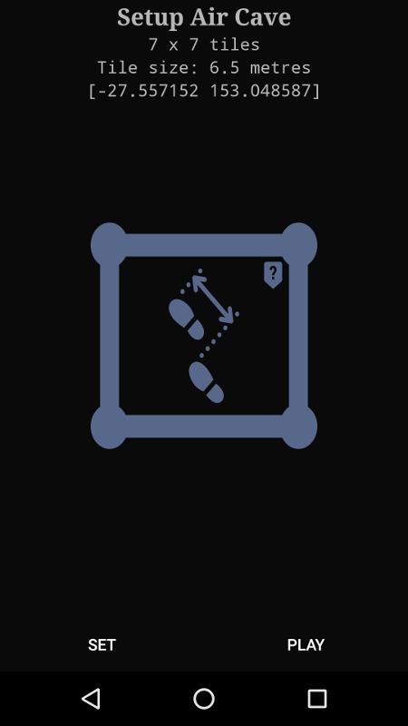
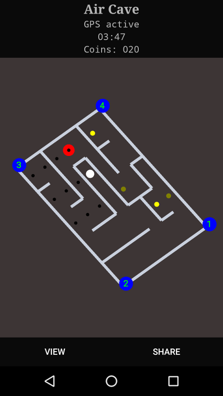

To play this game you must be outside. The aim of the game is to find
your way though a virtual maze.
You walk or run to set your position in the game with help from the
android location
feature.
Along the way you collect coins and try to complete as many levels as
you can before play time is over.
Please note, Air Cave does track your physical environment. It is
your responsibility to play in a safe area.

Start

Setup

Play - Map view
Object of the game
The object of the game is to collect all the hidden coins within the
5 minute play time.
Sharing
You may share your game score via other apps for example text or
email.
You may also share the maze with a friend by creating a QR code. Your
friend scans the code using the JOIN button.
Release history
10 July 2024 (Version 1.12)
Updated build for google play compliance
23 October 2020 (Version 1.11)
Updated build for google play compliance
17 November 2019 (Version 1.10)
Now uses fused location handling
Implemented distance display
Fix handling for exiting game when moved away from grid
3 November 2019 (Version 1.9)
Fix distance-from-game calculation
Fix to ensure coins generated for 3xn tile games
Implemented multi-level game play
Game now ends when you leave the game setup area
Updated the map display of player and exit positions
Removed the original grid display
31 August 2019 (Version 1.8)
Added new map interface
Removed google ads (for now)
4 January 2019 (Version 1.7)
Added a “Wolfenstein 3D” style view. You can toggle between this
view and the grid view.
Fixed the displayed distance when you move away from the game.
If you cross a wall and stay there after two warnings, this becomes
your new position.
The game no longer exits if you select “No Thanks” when prompted to
enable location services.
Pressing the hardware volume keys now changes the audio/media
volume.
22 September 2018 (Version 1.6)
Fix when moving back to a valid position. The game now ends if the
new position is the exit.
16 September 2018 (Version 1.5)
Now plays a chime when moving to a new valid tile
Fix handling of tile size during setup
9 September 2018 (Version 1.4)
Fix potential crash at startup
Exit now always displayed
Added game start message
19 August 2018 (Version 1.3)
Fix isssue with share results
17 August 2018 (Version 1.2)
Update home screen design
15 August 2018 (Version 1.1)
Fix issues with restart and gps signal lost
12 August 2018 (Version 1.0)
Updated home screen messages
11 August 2018 (Version 0.8)
Press headphone image to enable sounds without earbuds
Double tap headphone image to display about box
Fix share game handling
11 August 2018 (Version 0.7)
Add mob-ads
Coins accumulate between plays
Enable audio without earbuds by tapping the headphone icon
4 August 2018 (Version 0.6)
Passing the bat gives 10 coins but takes 10 seconds
Display last valid position when wall crossed
Grid changes colour when GPS signal lost
Added image to share results
Can now move to the next valid position from previous valid position
when in an invalid position.
1 August 2018 (Version 0.5)
Game doesn’t begin until player enters the maze
Fixed a problem with coordinate calculations
Fixed grid performance issue
24 July 2018 (Version 0.4)
Added a “Restart” option to allow playing a new game at the same
location
Improved the play screen display
Fix incorrect GPS signal lost message
Fix crash when turning off location while game active
22 July 2018 (Version 0.3)
Created a new icon
Updated setup help test
Updated game play
15 July 2018 (Version 0.2)
Added timer and score handling
QR code image now part of play screen
Audio now only plays from headset only
7 July 2018 (Version 0.1)
Initial release for early testing
Safety
Air Cave does track your physical location. It is your responsibility
to play in a safe area.
Privacy Policy
Air Cave requires permissions to access the camera of the device on
which it is installed.
The camera permission is required for sharing Air Cave game setup
data with other players via the Share Game QR code.
Use of the camera is not necessary in order for the application to
function (excluding the above feature), users may elect to not allow
this feature when prompted.